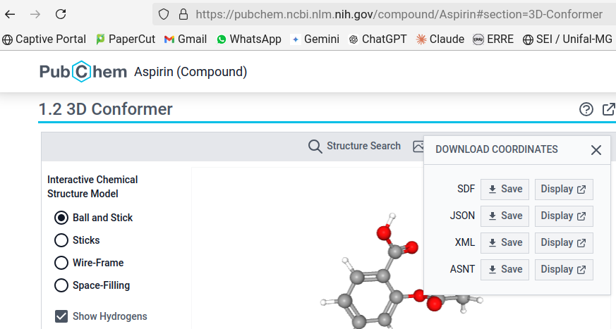

* Open local file # opens a window to search for the model file on your computer;
* Open URL # opens a window to search for the internet address that has the file
* Get PDB file # opens a window to enter a macromolecule code from the website of the same name (mainly proteins and nucleic acids)
* Get MOL file # opens a window to search for a *.mol file
* Open script # opens a window to search for a piece of code on the computerSome commands to venture into flying molecules
Objectives:
1. Load a molecule into Jmol in an alternative way
2. Use the Console for some commands
1 How to load a molecule into JSmol
JSmol is nothing more than Jmol itself, only developed for use in an internet browser, and which uses JavaScript among its languages (hence the S in JSmol).
Assuming that you have already opened the window for the JSmol applet in your browser but, contrary to what was done before (molecule name at the end of the site PubChem), you want to:
- load a molecule from another database;
- load a molecule whose file is already on your computer
Well, in that case you can use the mouse or a command line, whichever you prefer.
1.1 Loading the molecule with the mouse
To do this, simply right-click on the screen, as before, and select File–>Load. The options that appear are:
The first option is self-explanatory (
Open local file), the second option (Open URL) depends on the correct address for a given molecular model, the third (Get PDB file) refers to the Protein Data Brookhaven database for biopolymers, the fourth (Get MOL file) involves searching online in a specific database for small molecules, and the last (Open script), searching for a file containing lines of Jmol code for a set of actions.As textbooks cover small molecular structures, usually associated with functional groups in Inorganic and Organic Chemistry, as well as specific examples in areas such as Health, Biotechnology, and Industry, including some macromolecule models, it can be concluded that you are more likely to use remote search for small molecules (Get MOL file), molecules contained on your computer (Open local file), and/or biomacromolecules (Get PDB file).
Loading small molecules is identical to what was tried by adding the model name to the end of the JSmol address. Remote loading for protein, enzyme, and nucleic acid models requires knowledge of their PDB code or a keyword search on the Protein Data Brookhaven website.
Loading molecules saved on your PC involves a few steps, namely:
- Obtain the molecule model from the internet, or build it yourself;
- Download the file corresponding to the model (usually with an attribute *.mol, *.cif, *.cml, *.sdf, among more than 60 formats);
- Load it onto the JSmol page in one of two ways:
1. By clicking: File --> Load --> Open local file ;
2. By dragging the file from the folder where it is located to the JSmol tab in the browser.For example, let’s say you want to view the structure of aspirin downloaded to your computer.
Now it’s up to you:
- Go to the Pubchem website: https://pubchem.ncbi.nlm.nih.gov/
- Type
aspirinin the field and click on the 3D image that appears; - Download the model by clicking on
Download Coordinates, and then on theSDFoption; - Click on the first link to open the information about aspirin Download the structural model of aspirin from PubChem;
- Open the JSmol Console in your browser (right-click on the screen and select “Console”);
- Alternatively:
- Locate the file on your PC by going to “File–>Load–>Open local file,” then click “Load” to load it;
- Click on the downloaded file (“aspirin.sdf”, for example) and drag it directly into the JSmol window.

### Loading the molecule via command line
Loading a particular model via command line is restricted to searching for it on the internet, in databases, or on web pages. To do this, open the Console as explained above. The upper part is used to display the results of the commands, and the lower part is used to type them. In this case, click on the lower box of the Console and type the loading command, shown here as an example for an alkane:
load $alkaneThe Jmol Console, although it is a command programming language in its own right, has an interesting advantage over other programming languages: commands can be entered in the Console using either upper or lower case letters, and in both singular and plural forms.
You can try with other molecules, such as aspirin, cholesterol, phenol, etc. (names in English, due to the database). To retrieve a command line that was written previously, simply navigate between the commands that were used with the up and down arrows on the keyboard (command history).
Molecular models are loaded from the database Cactus - CADD Group Chemoinformatics Tools and User Services
1.2 Building the molecule using SMILES
No, it is not a literal translation of “smiles”, but rather a coding of structures for text. In this format, you can load a molecule using SMILES codes, and the system fills in the complementary hydrogen atoms.
Try this formatting at the address below.
https://chemapps.stolaf.edu/jmol/jmol.php?model=CThen replace the model of the link, “model=” with the following SMILES codes, alternatively:
1. Single bond: CC, CN, CO
2. Double bond: C=C, C=N, C=O
3. Triple bond: N%23N, CC%23C
Note: Although it seems strange (and it is!), the code for the triple bond is intended to circumvent the *SMILES* command, *“#”*, which is interpreted differently in internet addresses.1.3 Loading biopolymers (proteins, enzymes, nucleic acids) via command line
As mentioned above, biological macromolecules are loaded by identifying an alphanumeric code from the PDB-Protein Data Bank database. After obtaining this code, you can load the biopolymer via the online link or the Console. But be aware that the instructions are different (and don’t ask me why?!):
Through the Console:
load=XXXX # where XXXX is the macromolecule code
# Note: Note that the "$" sign is replaced by "=" for the PDB
Through the online link:
pdbid=XXXX
# Note: As the link is more complicated, here is a complete example for bungarotoxin, a snake protein toxin:
# https://chemapps.stolaf.edu/jmol/jmol.php?&pdbid=1ik8This can be illustrated by remotely loading the spike protein from the SARS-CoV-2 virus, as follows:
1. Go to the PDB-Protein Data Bank website - https://www.rcsb.org/ ;
2. In the search field, type "spike sars-cov-2" ;
3. Select the first option (the website will direct you to several structures of the spike protein);
4. Memorize the code of the first option (although any of them will work), i.e., "7FCD";
5. Enter the line to load the protein: "load=7FCD" (upper or lower case letters are acceptable)The default representation for proteins in Jmol is wireframe. To view the virus protein in a more “friendly” way, similar to how it appears in texts or on the internet, enter the commands below, your first sequence in programming language.
cartoon only # exclusive representation of the biopolymer structure
color chain # coloring by protein "chains"
Proteins, enzymes, nucleic acids, and macromolecular associations are more relevant to the study of structural Biochemistry. In this regard, I invite you to visit a section of the website that has detailed descriptions and representations of Biochemistry structures with the help of Jmol.